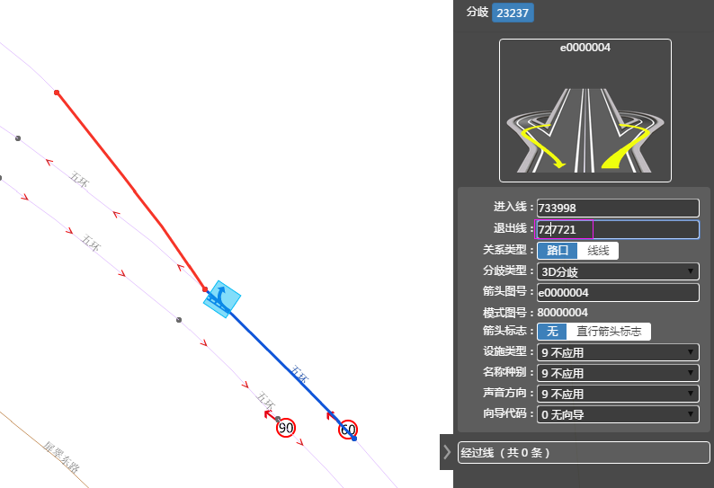

保存

更新数据

选择"关系"
单击地图上
3D分歧ICON
map高亮展示
进、经、退link


取消
放弃编辑结果


鼠标选择Link修改退出线、经过线


ESC

3D分歧编辑
属性编辑操作步骤
1、点击选择关系按钮；
2、map界面点击选择3D分歧icon；
3、选中3D分歧后，高亮进入、退出、经过线；
4、属性栏展示分歧详细信息
5、修改编辑分歧属性字段的值，点击保存，完成修改
取消动作：
1、保存前，点击其他工具按钮，结束当前操作，切换至其他动作；
2、保存前，按键盘的“Esc”，放弃分歧创建；
业务要求
1、声音方向：默认维护为“不应用”
2、设施类型：默认维护为“不应用”
3、 名称中别：默认维护为“不应用”
4、 分歧类型：3D分歧
5、 箭头图代码编辑原则：
鼠标移入输入框时提示：3D分歧箭头图号码首位只能是e或c！
① “箭头图号码”输入第一位时调用对应的图片进行选择，格式为*.png、*.bmp，返回数量
②3D分歧箭头图号码首位必须e或c,否则不予录入
③模式图号码由程序自动生成，将箭头图号码第1位替换成8；
6、模式图代码编辑原则：
鼠标移入编辑框时提示：3D分歧模式图号码第一位只能是5、8！
模式图号码只有第一位数字允许手工编辑，控制只允许输入“5，8”；
7、箭头图标志：空值
8、向导代码：无向导
实时控制
1、每个3D分歧最多只能存在一条详细信息


属性修改
编辑退出线操作步骤
1、点击选择关系按钮；
2、map界面点击选择3D分歧icon；
3、选中3D分歧后，高亮进入、退出、经过线；
4、鼠标点击退出线输入框，触发编辑退出线功能，地图上标签提示：请选择修改退出线！
5、地图上直接选择修改的退出线，原退出线取消高亮；
6、界面上高亮分歧进入，新的退出线；
7、点击空格保存修改，属性栏面板展示修改后的属性信息；
取消动作：
1、保存前，点击其他工具按钮，结束当前操作，切换至其他动作；
2、保存前，按键盘的“Esc”，放弃分歧创建；
业务原则
1、选择退出线时，默认开启线捕捉功能，系统根据鼠标移动捕捉最近的线；
2、程序根据进入线和退出线自动判断分歧类型，如果进入线和退出线直接挂接或挂接在同一路口上且均不为路口内道路，则分歧类型为“路口关系”，其他情况为“线线关系”；
a）如果是路口关系，在退出线上提示“节点直接挂接”；
b）如果是线线关系，在退出线上提示“线线连接”， （用于提示作业员确认，程序判断的类型是否正确）
3、如果修改的是线线分歧，则必须有经过线，程序自动计算或用户手动指定；选定经过线后，将经过线红色高亮显示，并且线宽为2；
4、如果是路口关系，系统提示“节点直接挂接”；
5、如果是线线关系，系统提示“线线连接”，
6、修改退出线后自动计算经过线，以浅蓝色高亮显示经过线；
7、用户按P键可手动指定经过线，按C键可重新计算经过线；？？？
8、属性栏刷新展示修改后的分歧详细信息。
实时控制
1、前检查：相同的进入线，进入点，经过线，退出线，不能创建两组分歧
2、前检查：10级路不可以作为分歧的进入线，经过线，退出线参与数据编辑；
3、前检查：相同的进入线，进入点，经过线，退出线，不能创建两组相同类型的分歧
